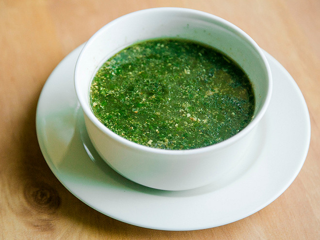

Esther is a Software Engineer who currently works in IT Support. She is currently shadowing a senior dev and assisting him with elastic installation. Software Engineering isn't her only passion, she's also interested in upskilling in the security field, learning about secure programming.
Esther's favourite food is molokheya . Molokheya is an egyptian traditional dish, tracing it's roots back to ancient egypt. It's molokheya leaves mixed with chicken stock/ leftover water from boiling a chicken. It is a very garlic heavy dish. Learn more about Molokheya and its cultural significance
Esther's top 3 TV shows
Esther's unhealthy food picks:
| Unhealthy Food Name | Description | Best eaten when? |
|---|---|---|
| Buldak Ramen | Can come as a ramen packet or in a Pot Noodle, tasty noddles | You want a quick meal (takes 10 minutes to make, max) |
| Kettle Sour Cream and Sweet Chilli Chips | Sensations but better. Perfect mix between sour and sweet. | Watching a movie at home, on the train - perfect snack with minimal effort and guilt. |
| Kinder Bueno White Ice Cream | The perfect mix of ice cream with chocolate. Chocolate branded ice cream done RIGHT. | On a hot day, gossiping/catching up with friends, also while watching a show. |